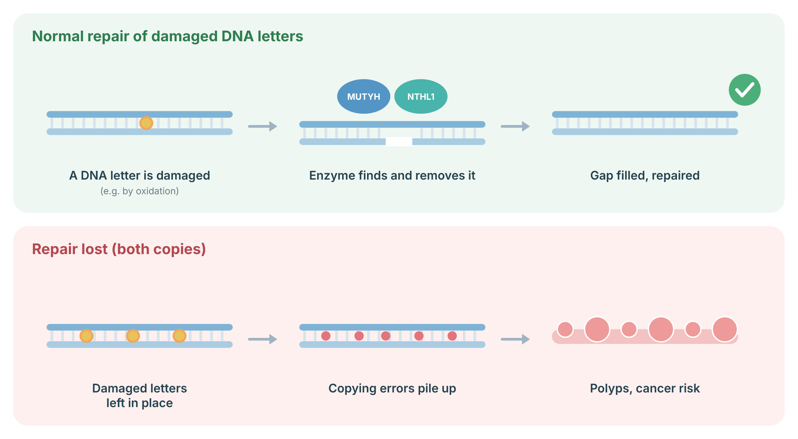
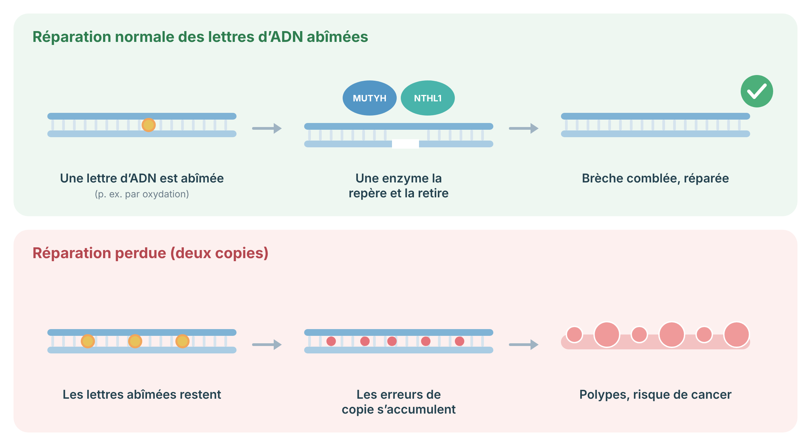

NTHL1 Cancer Prevention and Surveillance Protocol
A bilingual, patient-and-clinician-facing framework for biallelic NTHL1 tumour syndrome, monoallelic carriers, and unresolved results.
Understanding NTHL1 tumour syndrome
NTHL1 helps repair everyday DNA damage. The syndrome occurs when a person has a disease-causing variant in both copies of NTHL1. This raises the chance of colorectal polyps, colorectal cancer, breast cancer, and possibly several other cancers. A person with only one variant is a carrier and usually does not need this intensive plan.
NTHL1 encodes a DNA glycosylase in the base-excision repair pathway. Biallelic loss of function produces a characteristic somatic mutational process and an autosomal recessive multi-tumour predisposition. Polyps may be adenomatous, hyperplastic, or sessile serrated, and the phenotype ranges from few polyps to attenuated polyposis.
A VUS does not establish NTHL1 tumour syndrome. When two variants are detected, phase should be clarified whenever feasible through parental or family testing.
DNA letters can be damaged every day, for example by oxidation. Repair enzymes such as MUTYH and NTHL1 find a damaged letter, remove it and let the gap be filled in correctly. When both copies of the gene do not work, damaged letters are left behind, copying errors pile up in the bowel lining, and many polyps and a higher bowel cancer risk can result.
NTHL1: NTHL1 removes damaged (oxidized) DNA letters; both copies must be affected (recessive) to cause the condition.

Sources: Weren RD, et al. Nat Genet 2015;47:668–71 (PubMed).
Lifetime risks by genetic status
The colorectal risk is clearly high for people with two pathogenic variants. Breast risk also appears important. Exact percentages are uncertain because very few families have been studied.
| Genetic status | Outcome | Approximate risk | Interpretation |
|---|---|---|---|
| Biallelic pathogenic variants | Colorectal adenomas | High About 93% among reported individuals who underwent colonoscopy | Strong association, but the percentage comes from small, selected cohorts. |
| Biallelic pathogenic variants | Colorectal cancer | High About 49% reported in aggregated published cases; true lifetime penetrance is uncertain | Risk is clearly increased. Timely colonoscopic prevention is expected to reduce risk. |
| Biallelic pathogenic variants, females | Breast cancer | Increased 12/22, about 55%, in one compiled series | Likely clinically important, but ascertainment bias is substantial and a precise lifetime estimate is unavailable. |
| Biallelic pathogenic variants, females | Endometrial cancer | Possible increase 5/22, about 23%, in one compiled series | Association is plausible. Screening benefit has not been established. |
| Biallelic pathogenic variants | Any extracolonic cancer by age 60 | Broad estimate 35% to 78% | Very imprecise estimate from rare, selected families. It should not be used as an individual prediction. |
| Monoallelic carrier | Colorectal cancer or polyposis | Population level No proven material increase | Use population screening unless family history or phenotype indicates otherwise. |
| Monoallelic carrier | Breast cancer | Uncertain, possibly small | Current evidence does not support NTHL1-specific MRI or surgery. Base care on standard risk models and family history. |
These figures describe published cohorts, not a guaranteed individual outcome. Many reported families were identified because they already had cancer or polyposis.
Surveillance for biallelic NTHL1 pathogenic variants
Colonoscopy is the core prevention test. Breast screening is reasonable for women. Other tests are individualized because evidence is limited.
- ROUTINE: Colonoscopy. Begin at age 25 to 30, or earlier if symptoms, polyps, cancer, or a younger family diagnosis are present. Repeat every 2 to 3 years when normal. Repeat every 1 to 2 years when polyps are found, with shorter intervals after advanced, numerous, or incompletely removed lesions.
- ROUTINE: High-quality polypectomy. Remove all clinically relevant lesions when feasible. Record number, size, distribution, histology, and quality of bowel preparation.
- CONSIDER: Earlier colonoscopy from age 18 to 20. GeneReviews recommends this earlier expert-consensus approach. It is reasonable in families with early disease, marked polyposis, uncertain prior screening, or when the clinical team favours the most precautionary strategy.
- CONSIDER: Upper endoscopy. Evidence is sparse. A reasonable expert-consensus option is baseline EGD with careful duodenal and ampullary inspection around age 25 to 30, then about every 5 years if normal, modified by findings and a Spigelman-style approach.
- CONSIDER: Breast MRI and mammography for females. Discuss annual contrast-enhanced breast MRI from age 30 to 60. Add annual mammography from age 40 to 50, then every 1 to 2 years to age 75, adjusted for health, density, family history, local high-risk program rules, and prior cancer.
- OPTIONAL: Endometrial surveillance. Routine screening has no proven mortality benefit. Some expert centres consider transvaginal ultrasound plus endometrial biopsy every 1 to 2 years from age 40 to 60 after shared decision-making. Symptom-triggered evaluation is essential.
- NOT ROUTINE: Brain MRI, urine cytology, blood counts, dermatology imaging, or whole-body imaging. Do not screen asymptomatic patients solely because of NTHL1. Investigate neurologic, urinary, skin, head and neck, or hematologic symptoms promptly and use family history to individualize care.
Surveillance for monoallelic carriers and unresolved results
One pathogenic NTHL1 variant does not cause NTHL1 tumour syndrome. Most carriers follow ordinary screening based on age and family history.
- ROUTINE: Population screening. Use the applicable Canadian provincial colorectal and breast screening program, modified by personal and family history.
- ROUTINE: Formal risk assessment when family history is strong. Use validated breast and colorectal risk tools and consider whether another hereditary syndrome could explain the pedigree.
- NOT RECOMMENDED: NTHL1-specific intensified colonoscopy, breast MRI, or preventive surgery. A single NTHL1 pathogenic variant alone is not sufficient.
- UNRESOLVED: Pathogenic variant plus VUS, two variants with unknown phase, or uncertain variant classification. Do not treat as biallelic disease automatically. Clarify phase, obtain laboratory reclassification data, test informative relatives, and manage the observed phenotype in the meantime.
Risk-reducing surgery and hormone considerations
Most colorectal polyps can be removed during colonoscopy. Surgery becomes appropriate when the polyp burden cannot be controlled safely. Preventive breast or gynecologic surgery is not routinely recommended from NTHL1 status alone.
Colorectal surgery
Refer to an experienced colorectal surgeon when polyp number, size, distribution, advanced histology, repeated incomplete resection, or cancer makes endoscopic control unreliable. Choose segmental colectomy, subtotal colectomy with ileorectal anastomosis, or proctocolectomy according to rectal burden, cancer location, functional goals, and ability to continue surveillance. The retained rectum or pouch requires lifelong endoscopic surveillance.
Breast and gynecologic surgery
Evidence is insufficient to recommend risk-reducing mastectomy, hysterectomy, or bilateral salpingo-oophorectomy solely for NTHL1. Decisions may be reasonable for compelling family history, independent risk estimates, abnormal pathology, or another indication.
Hormones
No NTHL1-specific contraindication to contraception or menopausal hormone therapy is established. Use standard individualized assessment of breast, endometrial, thrombotic, cardiovascular, bone, and symptom factors. After hysterectomy, estrogen-only therapy may be considered when otherwise appropriate.
Chemoprevention and medical prevention
There is no proven medicine that prevents NTHL1-related cancer. Aspirin should not replace colonoscopy.
Aspirin: No NTHL1-specific randomized trial supports routine aspirin chemoprevention. Consider it only for an independent cardiovascular or colorectal indication after reviewing age, peptic ulcer disease, prior gastrointestinal bleeding, anticoagulants or antiplatelet drugs, kidney disease, anemia, allergy, and planned procedures. In Canada, low-dose aspirin commonly means 81 mg daily, but a dose should not be started for this syndrome without clinician review.
Calcium, vitamin D, NSAIDs, metformin, statins, and supplements: none is recommended specifically to prevent NTHL1-associated neoplasia. Correct deficiencies and treat other conditions on their own merits.
Genetic counselling and family planning
NTHL1 tumour syndrome is recessive. Brothers and sisters may have the same condition even when parents are healthy. Testing relatives can find people who need early screening.
- Confirm that both pathogenic variants are germline and, where possible, in trans.
- Offer targeted testing to adult siblings and other relatives according to the pedigree. Testing before age 18 is usually deferred unless the family has very early cancer or screening would begin earlier.
- When both parents are carriers, each pregnancy has a 25% chance of an affected child, 50% chance of a carrier child, and 25% chance of a child with neither familial variant.
- An affected person will transmit one pathogenic variant to every child. The child is affected only if the other biological parent is also a carrier and transmits a pathogenic variant.
- Discuss partner testing, prenatal diagnosis, and IVF with preimplantation genetic testing when relevant and desired.
- Update a three-generation pedigree, including colorectal polyps, pathology, ages at diagnosis, breast and endometrial cancers, brain tumours, urinary cancers, skin cancers, and consanguinity.
Lifestyle and nutrition
Healthy habits lower general cancer and heart disease risk, but they do not remove inherited risk or replace screening.
Recommend no tobacco, minimal or no alcohol, regular physical activity, healthy body weight without restrictive dieting, and a dietary pattern rich in vegetables, fruit, legumes, whole grains, and fibre. Limit processed meat and frequent high portions of red meat. Address constipation and bowel-preparation barriers. Sun protection and routine dental and primary care remain appropriate. No microbiome test, probiotic, detoxification regimen, or special NTHL1 diet has proven preventive benefit.
Tumour testing and treatment considerations after cancer
NTHL1 status may help explain a tumour, but it does not yet select one standard drug. Treatment should follow the cancer type and stage, with molecular testing when clinically indicated.
NTHL1-deficient tumours may show a characteristic single-base substitution signature, high tumour mutational burden in some cases, or other actionable findings. Tumour sequencing can support diagnosis when germline findings are uncertain and can identify standard biomarkers. There is no NTHL1-specific indication for immune checkpoint inhibition. Use approved tumour-agnostic indications such as mismatch-repair deficiency, microsatellite instability-high status, or sufficiently high tumour mutational burden according to current oncology guidance. Avoid assuming that all NTHL1-related tumours are MSI-high.
Emerging and investigational prevention
Research is active, but no experimental blood test, whole-body scan, vaccine, or targeted prevention drug is ready for routine care.
- Multi-cancer early detection blood tests.
- Whole-body MRI in asymptomatic NTHL1 carriers.
- Serial circulating tumour DNA for primary prevention.
- Mutation-signature-guided screening intensity.
- Microbiome-directed prevention, vaccines, or DNA-repair-targeted chemoprevention.
Participation should occur through an ethics-approved study with clear handling of false positives and incidental findings.
Summary of recommendations
The plan depends mainly on whether one or both NTHL1 copies carry pathogenic variants.
Biallelic NTHL1
Colon: colonoscopy age 25 to 30, every 2 to 3 years if normal and every 1 to 2 years if polyps. Consider starting at 18 to 20 in a precautionary or phenotype-driven plan.
Upper GI: consider EGD from about 25 to 30, roughly every 5 years if normal.
Biallelic NTHL1, females
Breast: consider annual MRI from 30 to 60; add mammography from 40, then adjust after 50.
Endometrium: symptom education is routine. Scheduled TVUS and biopsy are optional expert-consensus measures.
Monoallelic carrier
Use population screening and family-history-based risk assessment. Do not use syndrome-level screening or preventive surgery based on NTHL1 alone.
Across all groups
Act on symptoms, update the pedigree, clarify variant phase, avoid smoking, and reassess the plan when guidelines or family history change.
References
These sources support the protocol. The exact surveillance plan still needs individualized clinical review.
- National Comprehensive Cancer Network. NCCN Clinical Practice Guidelines in Oncology: Genetic/Familial High-Risk Assessment: Colorectal, Endometrial, and Gastric. Version 2024 and subsequent updates. Plymouth Meeting, PA: NCCN.
- De Voer RM, Nielsen M, Gao W, Kuiper RP, Hoogerbrugge N. NTHL1 Tumor Syndrome. GeneReviews®. Updated March 20, 2025.
- Grolleman JE, de Voer RM, Elsayed FA, et al. Mutational signature analysis reveals NTHL1 deficiency to cause a multi-tumor phenotype. Cancer Cell. 2019;35:256-266.e5.
- Weren RDA, Ligtenberg MJL, Kets CM, et al. A germline homozygous mutation in the base-excision repair gene NTHL1 causes adenomatous polyposis and colorectal cancer. Nature Genetics. 2015;47:668-671.
- Rivera B, Castellsagué E, Bah I, et al. Biallelic NTHL1 mutations in a woman with multiple primary tumors. New England Journal of Medicine. 2015;373:1985-1986.
- Belhadj S, Quintana I, Mur P, et al. NTHL1 biallelic mutations cause a multi-tumor syndrome. Clinical Gastroenterology and Hepatology. 2017;15:461-462.
- Elsayed FA, Grolleman JE, Ragunathan A, et al. Monoallelic NTHL1 loss-of-function variants and risk of polyposis and colorectal cancer. Gastroenterology. 2020;159:2241-2243.e6.
- Li N, Rowley SM, Goode DL, et al. Evaluation of the association of heterozygous germline variants in NTHL1 with breast cancer predisposition: an international multi-center study of 47,180 subjects. Breast Cancer Research. 2021;23:52.
- Nurmi AK, Myllykangas S, Kuismin O, et al. NTHL1 is a recessive cancer susceptibility gene. Scientific Reports. 2023;13:20984.
- Gao W, et al. Tumour spectrum, distinguishing features and management of NTHL1-associated tumour syndrome: a systematic review. Hereditary Cancer in Clinical Practice. 2025.
- Zaffaroni G, et al. Updated European guidelines for clinical management of familial adenomatous polyposis, MUTYH-associated polyposis and other rare adenomatous polyposis syndromes. British Journal of Surgery. 2024;111:znae070.
- Canadian Cancer Society. Colorectal cancer screening and breast cancer screening information. Current provincial and territorial programs should be checked at the time of care.
Comprendre le syndrome tumoral NTHL1
NTHL1 aide à réparer les dommages courants à l’ADN. Le syndrome survient lorsqu’une personne porte un variant pathogène dans les deux copies de NTHL1. Le risque de polypes colorectaux, de cancer colorectal et de cancer du sein augmente. Une personne qui porte un seul variant est habituellement porteuse saine et n’a généralement pas besoin de ce programme intensif.
NTHL1 code une ADN glycosylase de la voie de réparation par excision de base. La perte de fonction biallélique entraîne une prédisposition tumorale autosomique récessive. Les polypes peuvent être adénomateux, hyperplasiques ou festonnés sessiles.
Un VUS ne confirme pas le syndrome. Lorsque deux variants sont trouvés, la phase devrait être clarifiée si possible.
Les lettres de l’ADN peuvent être abîmées chaque jour, par exemple par oxydation. Des enzymes de réparation comme MUTYH et NTHL1 repèrent la lettre abîmée, la retirent et permettent de combler la brèche correctement. Quand les deux copies du gène ne fonctionnent pas, les lettres abîmées restent, les erreurs de copie s’accumulent dans la muqueuse intestinale, et de nombreux polypes ainsi qu’un risque accru de cancer colorectal peuvent en résulter.
NTHL1: NTHL1 retire des lettres d’ADN abîmées (oxydées); les deux copies doivent être atteintes (récessif) pour causer la maladie.

Sources : Weren RD, et al. Nat Genet 2015;47:668–71 (PubMed).
Risques à vie selon le statut génétique
Le risque colorectal est clairement élevé avec deux variants pathogènes. Le risque de cancer du sein semble aussi important. Les pourcentages exacts restent incertains parce que très peu de familles ont été étudiées.
| Statut génétique | Issue | Risque approximatif | Interprétation |
|---|---|---|---|
| Deux variants pathogènes | Adénomes colorectaux | Élevé About 93% among reported individuals who underwent colonoscopy | Strong association, but the percentage comes from small, selected cohorts. |
| Deux variants pathogènes | Cancer colorectal | Élevé About 49% reported in aggregated published cases; true lifetime penetrance is uncertain | Risk is clearly increased. Timely colonoscopic prevention is expected to reduce risk. |
| Deux variants pathogènes, femmes | Cancer du sein | Accru 12/22, about 55%, in one compiled series | Likely clinically important, but ascertainment bias is substantial and a precise lifetime estimate is unavailable. |
| Deux variants pathogènes, femmes | Cancer de l’endomètre | Hausse possible 5/22, about 23%, in one compiled series | Association is plausible. Screening benefit has not been established. |
| Deux variants pathogènes | Tout cancer extracolorectal avant 60 ans | Estimation large 35% to 78% | Very imprecise estimate from rare, selected families. It should not be used as an individual prediction. |
| Porteur ou porteuse d’un seul variant | Cancer colorectal ou polypose | Risque populationnel No proven material increase | Use population screening unless family history or phenotype indicates otherwise. |
| Porteur ou porteuse d’un seul variant | Cancer du sein | Incertain, possiblement faible | Current evidence does not support NTHL1-specific MRI or surgery. Base care on standard risk models and family history. |
Ces chiffres proviennent de cohortes publiées et ne prédisent pas avec certitude le risque individuel. Plusieurs familles ont été recrutées parce qu’un cancer ou une polypose était déjà présent.
Surveillance avec deux variants pathogènes NTHL1
La coloscopie est l’examen préventif principal. Une surveillance mammaire est raisonnable chez les femmes. Les autres examens sont individualisés.
- COURANT: Coloscopie. Commencer entre 25 et 30 ans, ou plus tôt selon les symptômes, les polypes, un cancer ou un diagnostic familial plus jeune. Répéter tous les 2 à 3 ans si l’examen est normal, et tous les 1 à 2 ans si des polypes sont trouvés.
- COURANT: Polypectomie de haute qualité. Retirer les lésions pertinentes et documenter le nombre, la taille, la distribution, l’histologie et la qualité de la préparation.
- À ENVISAGER: Début entre 18 et 20 ans. GeneReviews propose cette approche de consensus. Elle est raisonnable en présence d’une maladie familiale précoce, d’une polypose marquée ou d’un suivi antérieur incertain.
- À ENVISAGER: Endoscopie digestive haute. Une EGD de base vers 25 à 30 ans, puis environ tous les 5 ans si normale, peut être discutée. Adapter selon les résultats.
- À ENVISAGER: IRM mammaire et mammographie. Discuter d’une IRM annuelle avec contraste de 30 à 60 ans. Ajouter une mammographie annuelle de 40 à 50 ans, puis tous les 1 à 2 ans jusqu’à environ 75 ans.
- FACULTATIF: Surveillance de l’endomètre. Aucun bénéfice sur la mortalité n’est démontré. Certains centres discutent une échographie transvaginale et une biopsie endométriale tous les 1 à 2 ans de 40 à 60 ans.
- NON COURANT: IRM cérébrale, cytologie urinaire, formule sanguine répétée, imagerie dermatologique ou imagerie du corps entier chez une personne asymptomatique.
Surveillance des porteurs d’un seul variant et résultats non résolus
Un seul variant pathogène NTHL1 ne cause pas le syndrome tumoral NTHL1. La plupart des porteurs suivent le dépistage usuel selon l’âge et les antécédents familiaux.
- COURANT: Dépistage populationnel. Suivre les programmes québécois ou provinciaux applicables, adaptés aux antécédents personnels et familiaux.
- COURANT: Évaluation formelle du risque si l’histoire familiale est importante. Utiliser des modèles validés et rechercher une autre cause héréditaire au besoin.
- NON RECOMMANDÉ: coloscopie intensifiée, IRM mammaire ou chirurgie préventive uniquement à cause d’un seul variant NTHL1.
- RÉSULTAT NON RÉSOLU: clarifier la phase, demander les données de reclassification du laboratoire et tester des proches informatifs. Gérer entre-temps le phénotype observé.
Chirurgie de réduction du risque et considérations hormonales
La plupart des polypes peuvent être retirés par coloscopie. Une chirurgie devient appropriée lorsque la charge polypoïde ne peut plus être contrôlée. Une chirurgie mammaire ou gynécologique préventive n’est pas recommandée de routine sur le seul statut NTHL1.
Chirurgie colorectale
Référer en chirurgie colorectale lorsque le nombre, la taille, la distribution, l’histologie avancée ou les résections incomplètes rendent le contrôle endoscopique peu fiable. Le choix entre colectomie segmentaire, colectomie subtotale avec anastomose iléorectale et proctocolectomie dépend de la charge rectale, du site du cancer, des objectifs fonctionnels et de la capacité de poursuivre la surveillance.
Sein et gynécologie
Les données sont insuffisantes pour recommander une mastectomie, une hystérectomie ou une salpingo-ovariectomie bilatérale uniquement pour NTHL1.
Hormones
Aucune contre-indication propre à NTHL1 n’est établie pour la contraception ou l’hormonothérapie ménopausique. Utiliser l’évaluation standard individualisée.
Chimioprévention et prévention médicale
Aucun médicament n’a démontré qu’il prévient les cancers liés à NTHL1. L’aspirine ne remplace pas la coloscopie.
Aspirine: aucun essai randomisé propre à NTHL1 ne justifie une utilisation systématique. La considérer seulement pour une indication indépendante après évaluation du risque de saignement. Au Canada, une faible dose correspond souvent à 81 mg par jour, mais elle ne devrait pas être commencée pour ce syndrome sans avis clinique.
Le calcium, la vitamine D, les AINS, la metformine, les statines et les suppléments ne sont pas recommandés spécifiquement pour prévenir les tumeurs liées à NTHL1.
Conseil génétique et planification familiale
Le syndrome est récessif. Les frères et sœurs peuvent être atteints même si les parents sont en bonne santé. Le dépistage familial peut identifier les personnes qui ont besoin d’une surveillance précoce.
- Confirmer que les deux variants sont germinaux et, si possible, en trans.
- Offrir un test ciblé aux frères, sœurs et autres proches selon l’arbre familial.
- Lorsque les deux parents sont porteurs, chaque grossesse comporte 25 % de probabilité d’un enfant atteint, 50 % d’un enfant porteur et 25 % d’un enfant sans les variants familiaux.
- Discuter du test du partenaire, du diagnostic prénatal et de la FIV avec test génétique préimplantatoire selon les valeurs de la personne.
- Mettre à jour un arbre généalogique sur trois générations.
Mode de vie et nutrition
De saines habitudes réduisent le risque général de cancer et de maladie cardiovasculaire. Elles ne suppriment pas le risque héréditaire et ne remplacent pas le dépistage.
Recommander l’absence de tabac, peu ou pas d’alcool, une activité physique régulière, un poids favorable à la santé sans régime restrictif, et une alimentation riche en légumes, fruits, légumineuses, grains entiers et fibres. Limiter les viandes transformées et les grandes portions fréquentes de viande rouge. Aucun test du microbiome, probiotique, régime de détoxification ou régime NTHL1 particulier n’a démontré un bénéfice préventif.
Analyse tumorale et traitement après un cancer
Le statut NTHL1 peut aider à comprendre la tumeur, mais il ne choisit pas encore un médicament standard. Le traitement dépend du type et du stade du cancer.
Les tumeurs déficientes en NTHL1 peuvent montrer une signature mutationnelle caractéristique et parfois une charge mutationnelle élevée. Le séquençage tumoral peut soutenir le diagnostic et identifier des biomarqueurs standards. Il n’existe pas d’indication propre à NTHL1 pour l’immunothérapie. Utiliser les indications reconnues, comme MSI-H, déficience MMR ou charge mutationnelle élevée, selon les recommandations oncologiques actuelles.
Prévention émergente et expérimentale
Aucun test sanguin expérimental, examen du corps entier, vaccin ou médicament ciblé n’est prêt pour les soins courants.
- Tests sanguins de détection multicancer.
- IRM du corps entier chez les personnes asymptomatiques.
- ADN tumoral circulant en prévention primaire.
- Intensité du dépistage guidée par la signature mutationnelle.
- Prévention ciblant le microbiome ou la réparation de l’ADN.
Résumé des recommandations
Le programme dépend surtout de la présence d’un ou de deux variants pathogènes NTHL1.
Deux variants NTHL1
Côlon: coloscopie entre 25 et 30 ans, tous les 2 à 3 ans si normale et tous les 1 à 2 ans si polypes. Un début entre 18 et 20 ans peut être choisi selon le phénotype.
Tube digestif haut: envisager une EGD vers 25 à 30 ans, puis environ tous les 5 ans.
Deux variants, femmes
Sein: envisager une IRM annuelle de 30 à 60 ans et ajouter la mammographie dès 40 ans.
Endomètre: l’éducation sur les symptômes est courante. L’échographie et la biopsie planifiées sont facultatives.
Un seul variant
Suivre le dépistage populationnel et le risque familial. Ne pas appliquer le programme du syndrome sur NTHL1 seul.
Pour tous
Évaluer rapidement les symptômes, mettre à jour l’arbre familial, clarifier la phase des variants et réviser le plan lorsque les recommandations changent.
Références
Ces sources soutiennent le protocole. Le programme exact doit être individualisé par l’équipe clinique.
- National Comprehensive Cancer Network. NCCN Clinical Practice Guidelines in Oncology: Genetic/Familial High-Risk Assessment: Colorectal, Endometrial, and Gastric. Version 2024 and subsequent updates. Plymouth Meeting, PA: NCCN.
- De Voer RM, Nielsen M, Gao W, Kuiper RP, Hoogerbrugge N. NTHL1 Tumor Syndrome. GeneReviews®. Updated March 20, 2025.
- Grolleman JE, de Voer RM, Elsayed FA, et al. Mutational signature analysis reveals NTHL1 deficiency to cause a multi-tumor phenotype. Cancer Cell. 2019;35:256-266.e5.
- Weren RDA, Ligtenberg MJL, Kets CM, et al. A germline homozygous mutation in the base-excision repair gene NTHL1 causes adenomatous polyposis and colorectal cancer. Nature Genetics. 2015;47:668-671.
- Rivera B, Castellsagué E, Bah I, et al. Biallelic NTHL1 mutations in a woman with multiple primary tumors. New England Journal of Medicine. 2015;373:1985-1986.
- Belhadj S, Quintana I, Mur P, et al. NTHL1 biallelic mutations cause a multi-tumor syndrome. Clinical Gastroenterology and Hepatology. 2017;15:461-462.
- Elsayed FA, Grolleman JE, Ragunathan A, et al. Monoallelic NTHL1 loss-of-function variants and risk of polyposis and colorectal cancer. Gastroenterology. 2020;159:2241-2243.e6.
- Li N, Rowley SM, Goode DL, et al. Evaluation of the association of heterozygous germline variants in NTHL1 with breast cancer predisposition: an international multi-center study of 47,180 subjects. Breast Cancer Research. 2021;23:52.
- Nurmi AK, Myllykangas S, Kuismin O, et al. NTHL1 is a recessive cancer susceptibility gene. Scientific Reports. 2023;13:20984.
- Gao W, et al. Tumour spectrum, distinguishing features and management of NTHL1-associated tumour syndrome: a systematic review. Hereditary Cancer in Clinical Practice. 2025.
- Zaffaroni G, et al. Updated European guidelines for clinical management of familial adenomatous polyposis, MUTYH-associated polyposis and other rare adenomatous polyposis syndromes. British Journal of Surgery. 2024;111:znae070.
- Canadian Cancer Society. Colorectal cancer screening and breast cancer screening information. Current provincial and territorial programs should be checked at the time of care.